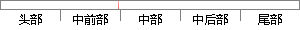

用户选择身份后注册，数据上传到后台数据库表中保存；
片段位置图

相似结果|
相似片段 1：身份信息和属性信息进行注册，其注册的信息被保存在数据库中。该用户下一次进入需要登录。注册成功或登录成功的用户拥有上传数据的权限，在上传的同时用户具有是否对数据进行机密的选择权。如果选择加密，则仿真平台
|
※ 片段修改建议 ※
近似词参考：- 后台：背景
- 保存：保留 留存 生存
系统自动生成语句：用户选择身份后注册，数据上传到背景数据库表中保留；
注：本片段修改建议为系统自动生成，仅供参考。